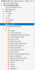

1，项目中新建js文件夹，js文件夹中新建esriapi文件夹
2，将4.16\api\arcgis_js_v416_api\arcgis_js_api\library\4.16目录下所有文件(即init.js文件所在目录)
放到esriapi文件夹中 
3，将init.js文件里的baseUrl里的内容(默认值为"HOSTNAME_AND_PATH_TO_JSAPI")修改为上面dojo文件夹的地址即"js/esriapi/dojo"，
4，将dojo.js文件(dojo文件夹里)里的baseUrl里的内容(默认值为"HOSTNAME_AND_PATH_TO_JSAPI")修改为和上面相同的地址，即"js/esriapi/dojo"，
5，引用dojo.js文件，src="js/esriapi/dojo/dojo.js"；
引用main.css文件，href="js/esriapi/esri/themes/light/main.css"